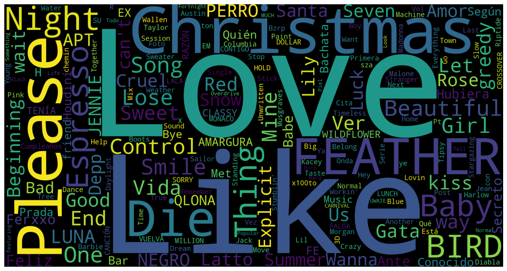
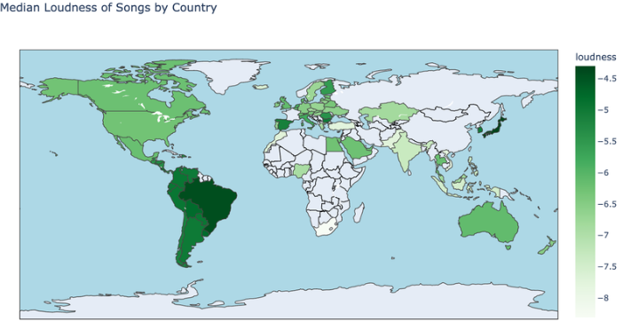
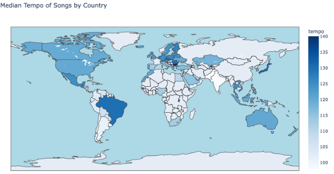
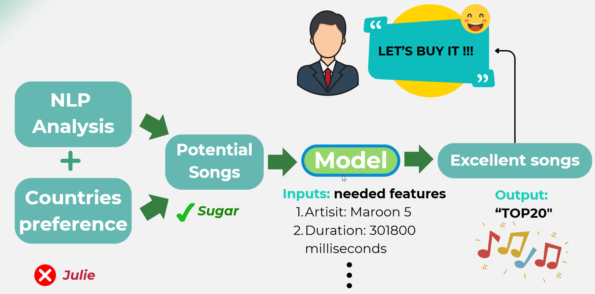

從Kaggle獲取Spotify每日更新的全球流行音樂dataset，包含25列特徵和170萬行記錄。進行了數據清理、去重和特徵工程，為後續分析奠定基礎。
Spotify Top Music Analysis
這是一個大數據分析項目，通過分析Spotify全球73個國家的170萬行音樂數據，揭示流行音樂火爆的關鍵因素。我系統性地進行了NLP情感分析、國家偏好研究、機器學習建模，最終轉化為商業應用建議，展示了完整的數據科學工作流程。數據來源： Kaggle
第一部分：數據收集與準備
第二部分：分析方向
NLP情感分析

（歌詞情感分析詞雲）
篩選熱門歌曲，使用Genius API獲取歌詞，應用BERT模型進行情感分析。發現具有明顯情感（高度正面或負面）的歌詞更易流行，同時歌曲標題和歌詞常包含'love'、'baby'等關鍵詞，將結果用詞雲圖總結，揭示成功歌曲的共同點特征。
國家偏好分析

（對音樂嚮度的偏好）

（對音樂節奏感的偏好）
使用Python做出全球國家的偏好圖，利用音樂特征loudness分析不同國家用戶對音樂嚮度的偏好，顏色越深表示更偏好更動感大聲的歌曲，利用音樂特征tempo分析不同國家用戶對音樂節奏感的偏好，顏色越深表示更偏好節奏感更強更快的歌曲。通過matplotlib和geopandas庫，我創建了互動式地圖視覺化，展示了各國用戶對不同音樂類型的偏好差異。例如，美國用戶偏好流行和嘻哈音樂，英國用戶更喜歡流行和搖滾，加拿大用戶傾向於流行和鄉村音樂，而德國用戶則偏好電子音樂，法國用戶喜歡流行和rap，日本用戶則傾向於J-pop和動漫音樂。這些分析不僅揭示了地區文化差異，還考慮了其他音樂特征如danceability和energy，以提供更全面的用戶偏好洞察。這些洞察有助於音樂平台針對不同地區用戶提供個性化推薦，同時為音樂創作者提供創作指導，並優化全球音樂分發策略。
機器學習建模

（簡單流程示意圖）
開發簡單XGBoost分類模型預測一首歌曲是否能進入受歡迎歌曲排行榜，這個模型的判斷標準是基於音頻特徵如tempo、duration、key和valence。模型達到72.56%的準確度，優於基準模型，為音樂平台提供數據驅動的決策支持。
左圖為簡單流程示意圖，展示這個project如何先由NLP情緒分析和國家分析篩選過關歌曲，再將歌曲數據輸入模型以預測是否這首歌有爆火潛質。這個模型不僅能幫助音樂平台預測哪些歌曲可能成為熱門，還能為創作者提供有價值的反饋，指導他們在創作過程中優化音頻特徵以提高歌曲的受歡迎程度。
第三部分：項目總結
項目成功揭示一些音樂成功的關鍵因素：情感明顯張揚的歌詞更易流行、地區偏好差異顯著，並且使用機器學習模型預測熱門歌曲。這些發現為音樂行業提供了數據驅動的決策框架，涵蓋從創作到營銷的各個環節。除了完成數據的分析，還將結果轉化為商業價值，發現可以通過數據洞察為音樂公司提供個性化推薦、本地化營銷、創作指導等用途。這些應用幫助音樂平台優化算法、改善用戶體驗，並為創作者提供數據驅動的創作指導。